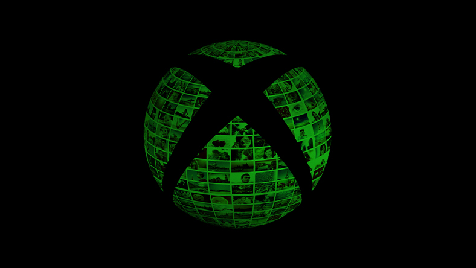

 Microsoft će podići cene igara 2023. godine Microsoft povećava cene svojih nadolazećih Xbox igara sledećeg meseca, koje će odgovarati cenama po kojima konkurenti kao što su Sony, Ubisoft i Take-Two nude svoje igre Igra Pong slavi svoj pedeseti rođendan Pre tačno 50 godina, Atari je objavio Pong. To nije bila prva video igra ikada stvorena, niti originalni pristup virtuelnom stonom tenisu. A njenim nastankom, prodao je više od 8.000 arkadnih ormarića. Dead Island 2: Igra koja se igra uz pomoć glasa Kada je izašla najava za Dead Island 2 developer Deep Silver je objavio da će biti prva koja podržava gaming preko digitalnog asistenta Alexa kompanije Amazon